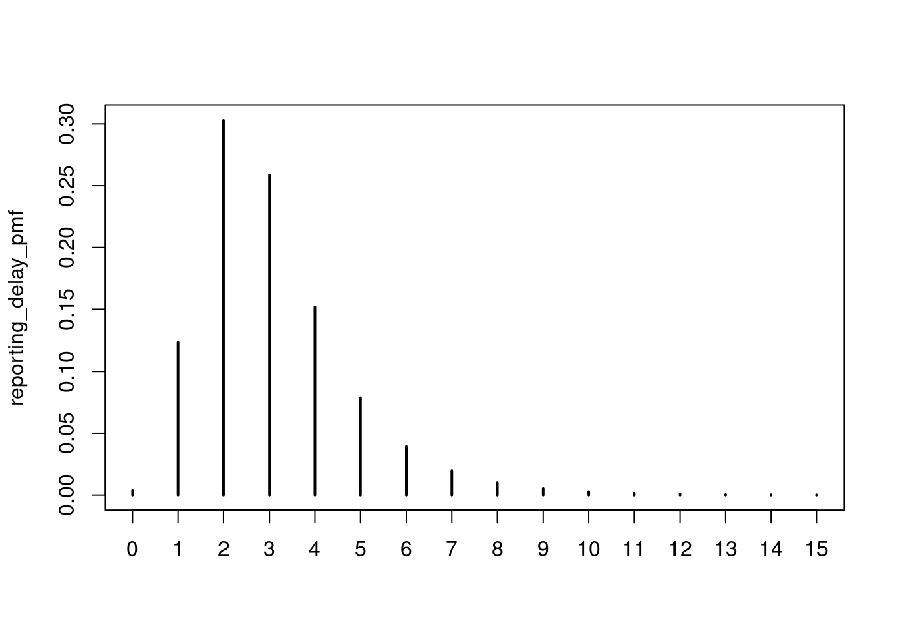
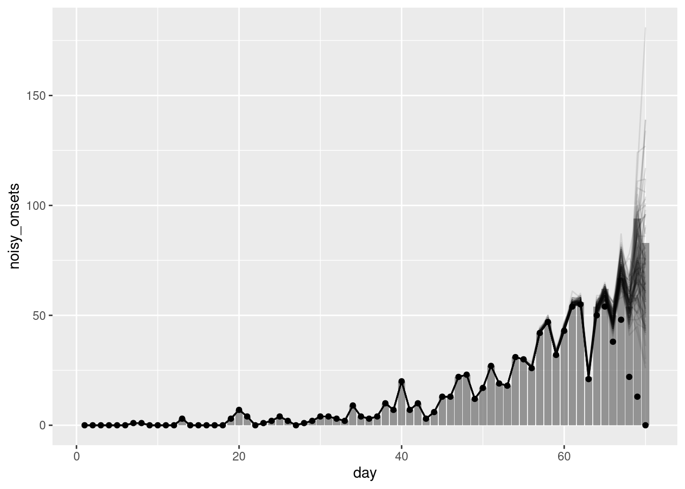
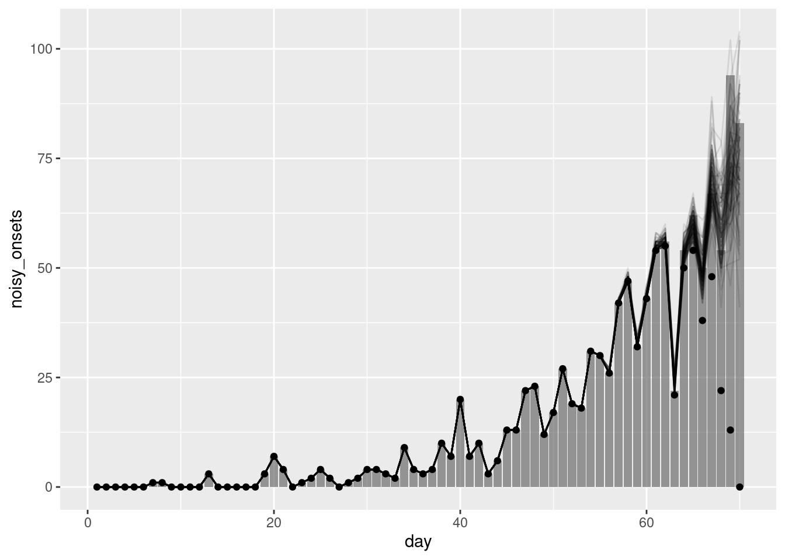
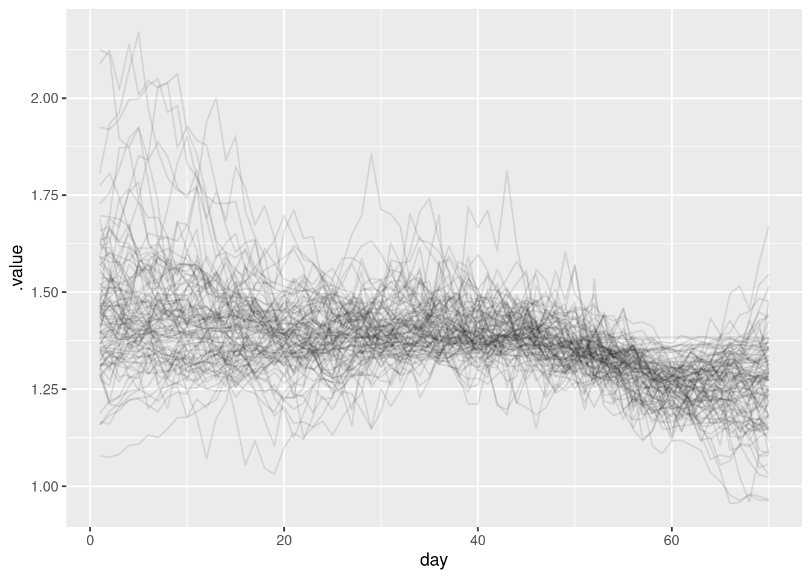

library("nfidd")Warning: replacing previous import 'bayesplot::rhat' by 'posterior::rhat' when
loading 'nfidd'library("dplyr")
library("tidyr")
library("ggplot2")
library("here")
library("cmdstanr")
library("tidybayes")In the last session we introduced the idea of nowcasting using a simple model. However, this approach had problems: we didn’t fully account for uncertainty, or for example observation error in the primary events, and it’s not a fully generative model of the data reporting process. And as we saw, if we get the delay distribution wrong, we can get the nowcast very wrong.
A better approach is to jointly estimate the delay distribution together with the nowcast. We can do this by using information from multiple snapshots of the data as it changes over time (using a data structure called the “reporting triangle”). In this session, we’ll introduce this approach to joint estimation in nowcasting. At the end we’ll then demonstrate a way to combine this with our previous work estimating the reproduction number, steadily improving our real time outbreak model.
This session aims to introduce how to do nowcasting if the reporting delay distribution is unknown.
The source file of this session is located at sessions/joint-nowcasting.qmd.
In this session we will use the nfidd package to load the data set of infection times, the dplyr and tidyr packages for data wrangling, ggplot2 library for plotting, the here library to find the stan model, and the cmdstanr library for using stan. We will also use the tidybayes package for extracting results of the inference.
Warning: replacing previous import 'bayesplot::rhat' by 'posterior::rhat' when
loading 'nfidd'The best way to interact with the material is via the Visual Editor of RStudio. If not using the Visual Editor please remember that the code in the session needs to be run inside the course repository so that the here() commands below find the stan model files.
We set a random seed for reproducibility. Setting this ensures that you should get exactly the same results on your computer as we do. We also set an option that makes cmdstanr show line numbers when printing model code. This is not strictly necessary but will help us talk about the models.
So far we have assumed that the delay distribution is known. In practice, this is often not the case and we need to estimate it from the data. As we discussed in the session on biases in delay distributions, this can be done using individual data and then passing this estimate to a simple nowcasting model like those above. However, this has the disadvantage that the nowcasting model does not take into account the uncertainty in the delay distribution or observation error of the primary events. We can instead estimate the delay distribution and nowcast the data jointly.
To jointly estimate we need to decompose observations into what is known as the reporting triangle. This is a matrix where the rows are the days of onset and the columns are the days of report. The entries are the number of onsets on day \(i\) that are reported on day \(j\). We can then use this matrix to estimate the delay distribution and nowcast the data. It is referred to as a triangle because the data for the more recent data entries are incomplete which gives the matrix a triangular shape.
We can construct the reporting triangle from onsets (\(N_{t}\)) as follows: \[ N_{t} = \sum_{d=0}^{D} n_{t,d} \]
Where \(n_{t,d}\) is the number of onsets on day \(t\) that are reported on day \(t-d\) and \(D\) represents the maximum delay between date of reference and time of report which in theory could be infinite but in practice we set to a finite value to make the model identifiable and computationally feasible. We can now construct a model to estimate \(n_{t,d}\),
\[ n_{t,d} \mid \lambda_{t},p_{t,d} \sim \text{Poisson} \left(\lambda_{t} \times p_{t,d} \right),\ t=1,...,T. \]
where \(\lambda_{t}\) is the expected number of onsets on day \(t\) and \(p_{t,d}\) is the probability that an onset on day \(t\) is reported on day \(t-d\). Here \(\lambda_{t}\) is the same as the expected number of onsets on day \(t\) in the simple nowcasting model above so we again modelled it using a geometric random walk for now. We model \(p_{t,d}\) as a Dirichlet distribution as it is a distribution over probabilities. \(p_{t,d}\) is equivalent to the reporting delays we have been using as fixed quantities so far but now estimated within the model. In most real-world settings we would want to use our domain expertise to inform the prior distribution of \(p_{t,d}\).
Now that we are aiming to jointly estimate the delay distribution we need additional data. We can simulate this data by using the same generative process as above but now also simulating the reporting delays.
Once again we generate our simulated onset dataset:
# A tibble: 6 × 3
day onsets infections
<dbl> <int> <int>
1 1 0 0
2 2 0 1
3 3 0 0
4 4 0 2
5 5 0 1
6 6 0 1We also need to simulate the reporting delays:
source(here("functions", "censored-delay-pmf.r"))
reporting_delay_pmf <- censored_delay_pmf(rlnorm, max = 15, meanlog = 1, sdlog = 0.5)
plot(reporting_delay_pmf)
We can then simulate the reporting triangle:
We also need to update our simulated truth data to include the Poisson observation error we are assuming is part of the observation process.
As we only partially observe the reporting triangle we need to filter it to only include the data we have observed:
Finally, we sum the filtered reporting triangle to get the counts we actually observe.
As usual we start by loading the model:
1: functions {
2: #include "functions/geometric_random_walk.stan"
3: #include "functions/observe_onsets_with_delay.stan"
4: #include "functions/combine_obs_with_predicted_obs_rng.stan"
5: }
6:
7: data {
8: int n; // number of days
9: int m; // number of reports
10: array[n] int p; // number of observations per day
11: array[m] int obs; // observed symptom onsets
12: int d; // number of reporting delays
13: }
14:
15: transformed data{
16: array[n] int P = to_int(cumulative_sum(p));
17: array[n] int D = to_int(cumulative_sum(rep_array(d, n)));
18: }
19:
20: parameters {
21: real<lower=0> init_onsets;
22: array[n-1] real rw_noise;
23: real<lower=0> rw_sd;
24: simplex[d] reporting_delay; // reporting delay distribution
25: }
26:
27: transformed parameters {
28: array[n] real onsets = geometric_random_walk(init_onsets, rw_noise, rw_sd);
29: array[m] real onsets_by_report = observe_onsets_with_delay(onsets, reporting_delay, P, p);
30: }
31:
32: model {
33: // Prior
34: init_onsets ~ normal(1, 1) T[0,];
35: rw_noise ~ std_normal();
36: rw_sd ~ normal(0, 0.1) T[0,];
37: reporting_delay ~ dirichlet(rep_vector(1, d));
38: // Likelihood
39: obs ~ poisson(onsets_by_report);
40: }
41:
42: generated quantities {
43: array[d*n] real complete_onsets_by_report = observe_onsets_with_delay(onsets, reporting_delay, D, rep_array(d, n));
44: array[n] int nowcast = combine_obs_with_predicted_obs_rng(obs, complete_onsets_by_report, P, p, d, D);
45: }
46: This time we won’t go into details of the model. For now, it is important that you understand the concept but as the models get more complex we hope that you trust us that the model does what we describe above.
Once thing to note is that we are now fitting the initial number of symptom onsets (init_onsets). This is different from earlier when we had to pass the initial number of infections (I0) as data. In most situations this number would be unknown so what we do here is closer to what one would do in the real world.
We then fit it do data:
joint_data <- list(
n = length(unique(filtered_reporting_triangle$day)), # number of days
m = nrow(filtered_reporting_triangle), # number of reports
p = filtered_reporting_triangle |>
group_by(day) |>
filter(d == max(d)) |>
mutate(d = d + 1) |>
pull(d), # number of observations per day
obs = filtered_reporting_triangle$reported_onsets, # observed symptom onsets
d = 16 # number of reporting delays
)
joint_nowcast_fit <- joint_mod$sample(data = joint_data, parallel_chains = 4) variable mean median sd mad q5 q95 rhat ess_bulk ess_tail
lp__ 373.36 373.76 7.88 7.87 359.77 385.62 1.00 1018 1558
init_onsets 0.20 0.15 0.18 0.15 0.01 0.55 1.00 4534 2743
rw_noise[1] -0.97 -0.97 0.88 0.91 -2.42 0.47 1.00 8763 3287
rw_noise[2] -0.71 -0.69 0.93 0.90 -2.26 0.81 1.00 8783 3074
rw_noise[3] -0.50 -0.49 0.95 0.92 -2.10 1.02 1.00 9306 3079
rw_noise[4] -0.32 -0.33 0.92 0.92 -1.84 1.21 1.00 9366 2713
rw_noise[5] -0.14 -0.14 0.95 0.96 -1.74 1.39 1.00 9499 2703
rw_noise[6] 0.04 0.03 0.94 0.96 -1.51 1.60 1.00 9234 2884
rw_noise[7] -0.06 -0.05 0.93 0.93 -1.60 1.44 1.00 9244 2500
rw_noise[8] -0.14 -0.16 0.96 0.93 -1.72 1.41 1.00 11198 2476
# showing 10 of 2348 rows (change via 'max_rows' argument or 'cmdstanr_max_rows' option)One benefit of this model is that because we have decomposed the data into the reporting triangle we can make a nowcast that uses the data we have available augmented with predictions from the model. This should give us far more accurate uncertainty estimates than the simple nowcasting models above (see stan/functions/combine_obs_with_predicted_obs_rng.stan but note the code is fairly involved). We now extract this nowcast:
Finally, we can plot the nowcast alongside the observed data:
ggplot(joint_nowcast_onsets, aes(x = day)) +
geom_col(data = noisy_onsets_df, mapping = aes(y = noisy_onsets), alpha = 0.6) +
geom_line(mapping = aes(y = .value, group = .draw), alpha = 0.1) +
geom_point(data = available_onsets, mapping = aes(y = available_onsets))
Reminder: The points in this plot represent the data available when the nowcast was made (and so are truncated) whilst the bars represent the finally reported data (a perfect nowcast would exactly reproduce these).
Look back at the last three nowcasts. How do they compare? What are the advantages and disadvantages of each? Could we improve the nowcasts further?
This section contains a lot of code and is quite complex. It is not necessary to understand all of it to get the main points of the session. We recommend reading through it to get a sense of how all the pieces fit together but don’t worry if you don’t understand all of it.
In the previous sessions, we have seen how to estimate the reproduction number and how to nowcast the data. We can now put these two pieces together to estimate the reproduction number and nowcast the data jointly. This should allow us to produce more accurate nowcasts as we can use the information from the reproduction number to inform the nowcast and vice versa.
As in the renewal sesssion we need to define the generation time distribution and a incubation period distribution. We will use the same distributions as in the renewal session for simplicity. These are:
and
We now load in the model:
1: functions {
2: #include "functions/geometric_random_walk.stan"
3: #include "functions/renewal.stan"
4: #include "functions/convolve_with_delay.stan"
5: #include "functions/observe_onsets_with_delay.stan"
6: #include "functions/combine_obs_with_predicted_obs_rng.stan"
7: }
8:
9: data {
10: int n; // number of days
11: int m; // number of reports
12: array[n] int p; // number of observations per day
13: array[m] int obs; // observed symptom onsets
14: int d; // number of reporting delays
15: int gen_time_max; // maximum generation time
16: array[gen_time_max] real gen_time_pmf; // pmf of generation time distribution
17: int<lower = 1> ip_max; // max incubation period
18: array[ip_max + 1] real ip_pmf;
19: }
20:
21: transformed data{
22: array[n] int P = to_int(cumulative_sum(p));
23: array[n] int D = to_int(cumulative_sum(rep_array(d, n)));
24: }
25:
26: parameters {
27: real<lower = 0> init_I; // initial number of infected
28: real init_R; // initial reproduction number
29: array[n-1] real rw_noise; // random walk noise
30: real<lower = 0> rw_sd; // random walk standard deviation
31: simplex[d] reporting_delay; // reporting delay distribution
32: }
33:
34: transformed parameters {
35: array[n] real R = geometric_random_walk(init_R, rw_noise, rw_sd);
36: array[n] real infections = renewal(init_I, R, gen_time_pmf);
37: array[n] real onsets = convolve_with_delay(infections, ip_pmf);
38: array[m] real onsets_by_report = observe_onsets_with_delay(onsets, reporting_delay, P, p);
39: }
40:
41: model {
42: // Prior
43: init_I ~ lognormal(-1, 1);
44: init_R ~ normal(-.1, 0.5); // Approximately Normal(1, 0.5)
45: rw_noise ~ std_normal();
46: rw_sd ~ normal(0, 0.05) T[0,];
47: reporting_delay ~ dirichlet(rep_vector(1, d));
48: // Likelihood
49: obs ~ poisson(onsets_by_report);
50: }
51:
52: generated quantities {
53: array[d*n] real complete_onsets_by_report = observe_onsets_with_delay(onsets, reporting_delay, D, rep_array(d, n));
54: array[n] int nowcast = combine_obs_with_predicted_obs_rng(obs, complete_onsets_by_report, P, p, d, D);
55: }
56: Familiarise yourself with the model above. Can you see how it combines the nowcasting and the estimation of the reproduction number? Can you suggest how you swap in the simple nowcasting model whilst keeping the estimation of the reproduction number?
Essentially rather than using observe_onsets_with_delay.stan we would use condition_onsets_by_report.stan and pass in the proportion reported as a data. This would allow us to use the simple nowcasting model whilst still estimating the reproduction number. We would also remove the generated quantities block as we are not nowcasting the data and simplify the observations to just the number of onsets.
Now let’s fit the final model for this session!
joint_rt_data <- c(joint_data,
list(
gen_time_max = length(gen_time_pmf),
gen_time_pmf = gen_time_pmf,
ip_max = length(ip_pmf) - 1,
ip_pmf = ip_pmf,
h = 0 # this is a small easter egg for the attentive reader
)
)
joint_rt_fit <- joint_rt_mod$sample(
data = joint_rt_data, parallel_chains = 4,
adapt_delta = 0.95,
init = \() list(init_R = 0, rw_sd = 0.01)
)We use adapt_delta = 0.95 here as this is a relatively complex model with a difficult to explore posterior. Increasing this setting decreases the step size of the sampler and so makes it easier for it to explore the posterior. The downside is that fitting then takes longer.
variable mean median sd mad q5 q95 rhat ess_bulk ess_tail
lp__ 359.70 359.87 6.58 6.53 348.26 370.04 1.00 1518 2162
init_I 1.42 1.32 0.64 0.58 0.60 2.55 1.00 2798 2275
init_R 0.35 0.34 0.12 0.10 0.16 0.55 1.00 2607 2353
rw_noise[1] 0.04 0.04 0.99 0.98 -1.56 1.67 1.00 6624 2481
rw_noise[2] 0.04 0.04 1.00 1.00 -1.59 1.66 1.00 7632 3058
rw_noise[3] 0.04 0.04 0.99 1.00 -1.57 1.67 1.00 7162 3073
rw_noise[4] 0.00 0.01 1.03 1.02 -1.72 1.67 1.00 5942 2357
rw_noise[5] 0.01 0.00 0.96 0.96 -1.58 1.64 1.00 7886 2930
rw_noise[6] 0.01 0.01 1.01 1.02 -1.66 1.67 1.00 7219 2970
rw_noise[7] -0.02 -0.01 0.98 0.98 -1.62 1.61 1.00 7803 2780
# showing 10 of 2489 rows (change via 'max_rows' argument or 'cmdstanr_max_rows' option)First we can extract the nowcast and plot the nowcast alongside the observed data:
ggplot(joint_nowcast_with_r_onsets, aes(x = day)) +
geom_col(data = noisy_onsets_df, mapping = aes(y = noisy_onsets), alpha = 0.6) +
geom_line(mapping = aes(y = .value, group = .draw), alpha = 0.1) +
geom_point(data = available_onsets, mapping = aes(y = available_onsets))
We can also extract the reproduction number and plot it:
joint_rt <- joint_rt_fit |>
gather_draws(R[day]) |>
ungroup() |>
filter(.draw %in% sample(.draw, 100))
ggplot(joint_rt, aes(x = day, y = .value, group = .draw)) +
geom_line(alpha = 0.1)
What do you think of the nowcast now? Does it look better than the previous one? What about the reproduction number?
epinowcast package implements a more complex version of the model we have used here. It is designed to be highly flexible and so can be used to model a wide range of different data sets. You will have the opportunity to try it in a later session.